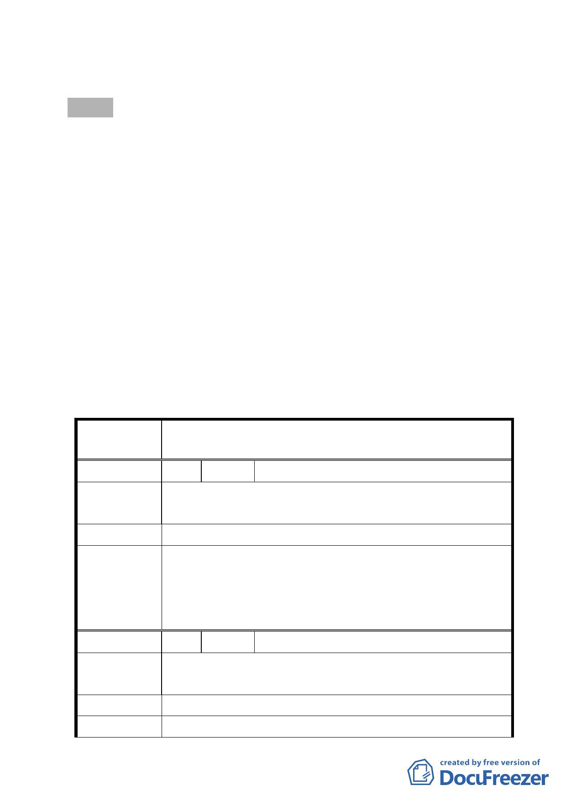

七、法令依據：都市計畫法第 27 條第 1 項第 4 款。
八、公民或團體陳情意見：3 件（詳後附綜理表）。
決議：
一、本案依市府說明因全案業符合「修訂臺北市老舊中低層建築
社區辦理都市更新擴大協助專案計畫」申請條件，故本案除
計畫書內容依以下二點進行修正外，其餘照案通過。
（一）計畫書第2頁、第11頁中有關本案基地位置之載述，其中南、
北方位錯置，請修正。
（二）計畫書第8頁應補充本案重新辦理專案變更所對應之作業流
程及相關符合要件。
二、本計畫所適用專案變更係提供中低層老舊住宅取得較高容積
獎勵之機會，有關陳情意見所述及擬排除於本次更新範圍部
分，錄請市府納入後續都市更新及爭議處理審議會中審慎處
理。
三、公民或團體所提意見審決如後附綜理表。
臺北市都市計畫委員會公民或團體所提意見綜理表
變更臺北市松山區美仁段一小段 800 地號等 9 筆土地第三
案 名 種住宅區為第三種住宅區（特）細部計畫案
編 號 1 陳情人 羅謝蘭香
土地標示：松山區美仁段一小段 802 地號（南京東路四段 53 巷 7 弄 7 號 2 樓）
陳情理由
私人產權，不同意改建。
建 議 辦 法 公權力不應介入私人產權。
本計畫所適用專案變更係提供中低層老舊住宅取得較高容
積獎勵之機會，有關陳情意見所述及擬排除於本次更新範圍
委員會決議
部分，錄請市府納入後續都市更新及爭議處理審議會中審慎
處理。
編 號 2 陳情人 韓英民
土地標示：松山區美仁段一小段 800 地號（南京東路四段 53 巷 7 弄 7 號）
陳情理由
不同意。
建 議 辦 法 私有土地及房舍市府無權迫使改建。
委 員 會 決 議 同編號 1。
- 10 -